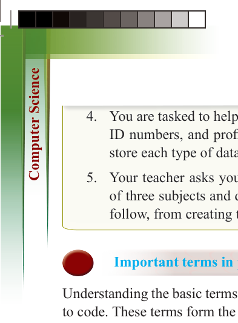
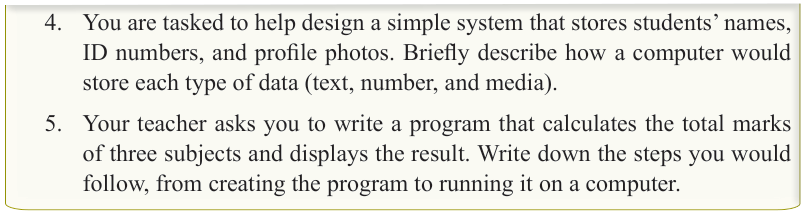
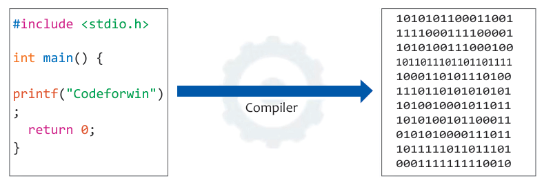

for Secondary Schools

4. You are tasked to help design a simple system that stores students’ names,
ID numbers, and profile photos. Briefly describe how a computer would store each type of data (text, number, and media).
5. Your teacher asks you to write a program that calculates the total marks of three subjects and displays the result. Write down the steps you would follow, from creating the program to running it on a computer.
Important terms in programming

Understanding the basic terms used in programming is essential for anyone learning

to code. These terms form the foundation of how programs are written, understood,

and executed. Some of the most important programming terms include:

Compiler


A compiler is a special software program that translates code written in a high-level


programming language (such as C, Java, or C++) into machine language (binary


code) that a computer’s CPU can understand and execute. It processes the entire

source code at once, converting it into object code or an executable file. This allows


the program to run directly on the computer hardware without needing the source


code during execution.
Compared to interpreters, compilers typically require less time during execution,

as the code is already fully compiled. The compilation process generally involves

several stages, including compiling, linking with system libraries, and executing

the program. Common examples of compilers include Dev-C++, Borland C++, and

Visual C++. Figure 3.3 shows the process where source code written in a high-level


language is translated by a compiler into object code (machine language) that the


CPU can execute. Table 3.1 shows compilers for different languages.



#include <stdio.h> int main() { printf("Codeforwin")
; return 0;
}
1010101100011001
1111000111100001
1010100111000100
1011011101101101111
1000110101110100
1110110101010101
1010010001011011
1010100101100011
0101010000111011
1011111011011101
0001111111110010
Compiler
Figure 3.3: Translation of source code in a high-level language into object code by a compiler